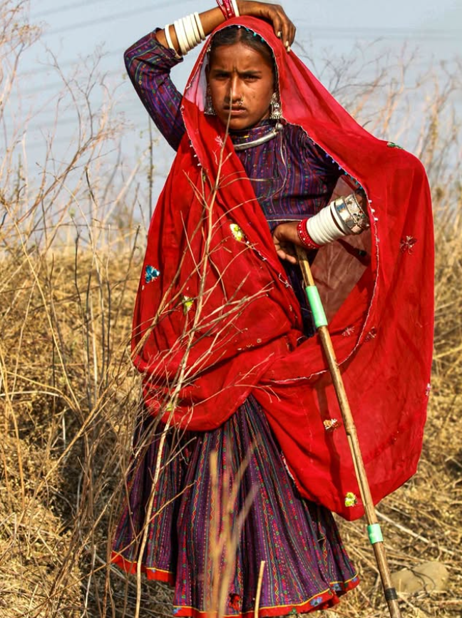

In the Banni grasslands of Kutch, in western India, the Maldhari people have grazed cattle for centuries on land they do not legally own. The state classifies it as wasteland. The Maldharis know it as something else entirely: a living system of seasonal routes, water sources and communal memory that has sustained their herds longer than the Indian state has existed.
I came to study soil. I stayed because of what the soil couldn't explain by itself.

Who Farms. Who Owns.
Across dryland regions globally, roughly 43 percent of farmers working degraded land are women. Fewer than 20 percent hold formal title to that land. This is not a coincidence. It is a system.
The logic runs like this. Land without ownership title can't secure credit. Without credit, you can't invest in the inputs or fallowing practices that would let it recover. Without recovery, yields fall. When yields fall, you add labor hours to compensate. Those hours come from somewhere. They come from the women and children already working the longest days.
I have spent years building models of soil carbon dynamics. The models are good at telling you what conditions allow degraded land to recover. They are less good at explaining why those conditions almost never exist where recovery is most needed. That gap is what this essay is about.
The Mechanism
Soil degradation is slow. It moves below the threshold of what a single season can reveal. You graze a little too heavily because you had no choice, because the rains failed and there was nowhere else to go, because selling the herd meant selling everything. You come back the next year and the land looks more or less the same. The year after that too.
The damage accumulates. Then one season it doesn't look the same.
By the time degradation becomes visible, it has usually crossed a threshold that makes cheap recovery impossible. This is the core trap. The interventions that work at early stages, reduced stocking density, composting, fallowing, all require either capital or time. Insecure tenure removes the incentive to invest capital. Poverty removes the time.
What I found in the data, confirmed across multiple study regions, is that the underinvestment is not produced by ignorance or carelessness. It is produced by uncertainty. A farmer who does not know whether she will still be working this land in five years has a perfectly rational reason not to invest in its five-year recovery. The market has not failed here. The property rights structure has.
The Time Poverty Spiral
This is where the loops start connecting to each other, and where the story gets harder to hold.
Women in smallholder households already carry a disproportionate share of subsistence labor: water collection, fuelwood gathering, food preparation, childcare. When land degrades, those tasks expand. Fuelwood has to come from farther away. Water sources become unreliable. The household falls back on food purchases, which require cash, which requires additional income-generating work.
Each burden is, in isolation, manageable. Their connectivity is not.
There is a detail I keep returning to in my field notes. A woman I interviewed in Rajasthan described adding three hours to her daily routine over four years as pasture conditions near her village declined. Three hours. Not dramatically, not all at once. Just steadily, year by year, the way the land itself was declining. I do not know her land tenure situation. I did not have time to ask. But I have seen enough data to know that she almost certainly does not hold title to the land she depends on.
This story does not belong to one woman or one country. It belongs to hundreds of millions of people living where ecological degradation and unequal ownership overlap. Those two large systems have been running in the same direction for a long time.
What Progress Looks Like
Let me be specific about what I mean by progress, because in this field the North Star is not obvious.
It is not simply more trees planted or more hectares enrolled in restoration programs. Restoration without tenure security is restoration that doesn't hold. Farmers who don't expect to be on the land in ten years don't make ten-year investments, and they are right not to. The ecological intervention and the institutional intervention have to happen together or neither of them sticks.
Progress in this field looks like this: a smallholder woman holds documented user rights to the land she works, not necessarily full ownership, but something legally recognized and enforceable. That documentation makes her eligible for credit, for restoration program participation, for government support. She invests in a three-year fallowing cycle because she knows she will be there to see it through. Her yields recover. Her fuelwood burden drops. She gets three hours back.
This has happened. Ethiopia's land certification program, which issued land rights to women as co-holders alongside their husbands, produced measurable increases in land investment and soil conservation within a few years of implementation. Niger's farmer-managed natural regeneration movement, which gave communities recognized rights over trees on their own fields, reversed decades of deforestation across millions of hectares. These are not pilot projects. They are proof that the mechanism I am describing runs in both directions.
Communal tenure systems are worth paying attention to here too. In some regions, communities that have managed land collectively have done so more sustainably than either state management or individual title would predict. The Maldhari case in Kutch is one of them. The lesson is not that communal tenure is always better. It is that the link between legal ownership and land stewardship is more complicated than most development policy assumes, and that the solutions will need to be as varied as the tenure systems they are trying to reach.
I am under no illusion that property rights alone fix soil. The ecological science still matters. The carbon dynamics still have to be right. But the data I have spent years collecting points to one consistent finding: the places where restoration is not happening are almost never places where the science is unknown. They are places where the incentive to act on the science does not exist. Fix that, and the rest follows faster than anyone expects.
The ground beneath her feet is the same ground I am trying to understand.
My models are getting more accurate every year.
The science says the land can heal. We are getting closer to fixing the part that isn't science.